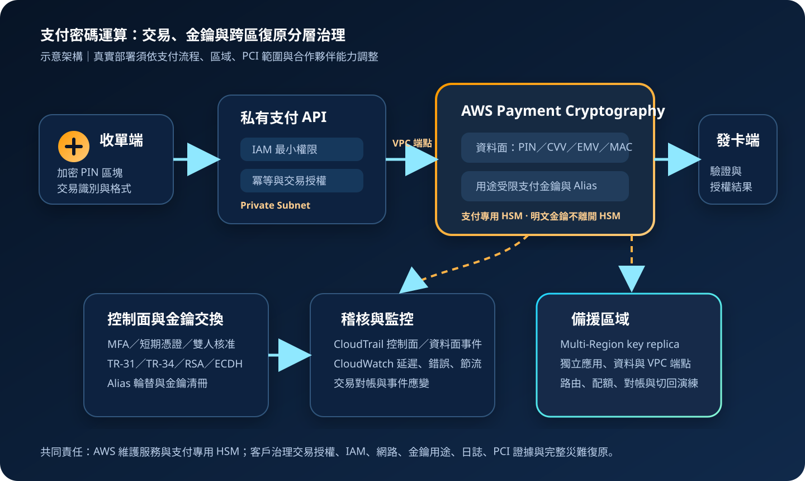

AWS Payment Cryptography：支付金鑰與交易密碼運算治理
AWS Payment Cryptography 以受管支付專用 HSM 提供支付金鑰生命週期與交易密碼運算 API，支援 PIN、卡片驗證資料、MAC、EMV 與支付金鑰交換。它可取代部分自建支付 HSM 功能，但不能取代交易授權、持卡人資料治理、PCI 範圍盤點與應用層防詐控制。
作者：Dr. William｜查閱與發布：2026-11-04
服務定位
AWS Payment Cryptography 是用於支付處理的受管金鑰管理與密碼運算服務。支付應用程式透過控制面 API 建立、匯入、停用、標記與管理金鑰，再透過獨立資料面 API 執行 PIN 區塊轉換、PIN 驗證、卡片驗證值產生或驗證、EMV 密碼圖驗證、MAC 與資料加解密等作業。
服務底層使用符合支付產業需求的 HSM，將金鑰用途、演算法與操作模式綁定於金鑰屬性。這種限制有助於落實「單一用途金鑰」原則，但支付機構仍須自行判斷每種金鑰在收單、發卡、交換與終端流程中的正確用途。
核心概念與服務邊界
金鑰與交換
- 支付金鑰：以用途、演算法與操作模式限制可執行的密碼作業。
- Key ARN：區域內的唯一金鑰識別；建立或匯入相同材料仍會形成不同生命週期。
- Alias：應用可用友善名稱參照金鑰，輪替時更新指向而不改程式設定。
- TR-31：將工作金鑰與用途屬性綁定於受保護金鑰區塊。
- TR-34／RSA／ECDH：用於建立或交換 KEK，再安全交換後續工作金鑰。
API、網路與可用性
- 控制面：管理金鑰、Alias、標籤與生命週期，權限應與交易呼叫分離。
- 資料面：執行高頻支付密碼作業，必須限制可用金鑰與 API 動作。
- PrivateLink：可使用 VPC 介面端點降低流量經公開網路路徑的需求。
- 區域服務：區域內跨至少三個可用區設計；跨區可使用 Multi-Region key replication。
- CloudTrail：控制面事件會被記錄；高量資料事件須另以進階事件選取器啟用。
適合與不適合的使用情境
適合
- 發卡機構需要產生或驗證 CVV、PIN 驗證資料與 EMV 授權密碼圖。
- 收單、支付交換或處理平台需要在不同加密區域之間轉換 PIN 區塊。
- 既有支付 HSM 工作負載要轉為 API 模式，並以 TR-31／TR-34 與合作夥伴交換金鑰。
- 支付系統需要依 PCI PIN、PCI P2PE 或相關控制要求使用支付專用密碼功能。
- 跨區支付平台需要同一支付金鑰材料的受管複寫，以降低區域中斷影響。
不適合或不能單獨完成
- 一般檔案、磁碟、資料庫、應用設定或非支付資料的通用加密。
- 儲存 API Token、cookie、資料庫密碼或其他應用機密；此類資料應使用 Secrets Manager 或 Parameter Store。
- 把原始持卡人資料長期留在日誌、訊息佇列或分析平台，再期待 HSM 自動消除 PCI 範圍。
- 只需要 AWS 服務原生加密整合，沒有 PIN、EMV、卡片驗證或支付金鑰交換需求。
- 團隊尚未定義金鑰用途、雙人控制、交易授權、例外處理與跨區切換程序。
示意故事案例：跨區支付交換平台的 PIN 轉換
以下為示意案例，不代表特定企業或正式部署。 一家支付處理平台接收多家收單機構送入的加密 PIN 區塊，再轉換為不同發卡機構可接受的格式。舊架構依賴兩座機房中的專用支付 HSM，金鑰交換程序分散，應用與管理人員也共用過寬權限。
新架構把支付 API 放在私有子網路，控制面與資料面分別使用不同 IAM 角色。交易服務只能呼叫核准的資料面動作與指定 Alias；金鑰管理角色使用 IAM Identity Center、MFA 與短期憑證，不能提交一般交易。合作夥伴以 TR-34 建立 KEK，再以 TR-31 交換工作金鑰，正式金鑰用途與模式在建立時固定。
主要區域與備援區域部署相同應用，支付金鑰使用 Multi-Region key replication。Alias、路由、VPC 端點、應用設定與交易依賴仍分區管理。CloudTrail 集中保存控制面與必要的資料面事件，CloudWatch 監控錯誤率、延遲、節流與交易失敗；切換演練同時驗證應用、金鑰、合作夥伴連線及交易對帳，而不是只確認金鑰存在。

建置與運作流程
- 盤點支付流程：列出收單、交換、發卡、終端與合作夥伴，標示 PIN、PAN、CVV、EMV 密碼圖、MAC 與金鑰流向。
- 確認服務適配：逐項比對所需演算法、金鑰類型、PIN 區塊格式、EMV 流程、區域與配額。
- 建立帳號邊界：支付密碼服務放在受控帳號，以 Organizations SCP、IAM 最小權限與職務分離限制管理。
- 分離控制面與資料面：建立不同角色、政策、部署管道與告警；交易服務不得建立、匯入或刪除金鑰。
- 建立私有連線：支付應用置於私有子網路，為控制面與資料面配置適用的 VPC 端點與端點政策。
- 設計金鑰清冊：為每把金鑰記錄用途、演算法、模式、擁有者、合作夥伴、區域、有效期、Alias 與輪替程序。
- 交換金鑰：優先採核准的電子交換流程；TR-34、TR-31、RSA 或 ECDH 的組合須依雙方能力與官方支援矩陣選擇。
- 建立 Alias 與輪替：應用使用 Alias；新金鑰經測試與核准後更新指向，舊金鑰依交易與對帳需求保留或停用。
- 限制資料面權限：只允許必要 API、金鑰與 Alias，並加入組織、網路與標籤條件。
- 保護應用機密：非支付金鑰的連線資訊與設定存於 Secrets Manager 或 Parameter Store，並以 KMS 加密。
- 啟用稽核：建立組織級 CloudTrail；依稽核需求以進階事件選取器啟用資料面事件，控制成本與敏感資料暴露。
- 建立監控：以 CloudWatch 監控 API 錯誤、延遲、節流、授權失敗與應用交易結果，並連結對帳與事件流程。
- 設計跨區：評估 Multi-Region key replication、區域配額、Alias、網路、DNS、資料庫與合作夥伴端點的一致性。
- 演練故障：測試金鑰停用、Alias 誤指、端點故障、區域中斷、重送與重複交易，確認交易冪等與對帳。
成本、可用性與維運考量
成本主要由 API 呼叫量與啟用中的金鑰數量構成，並採分級計價；CloudTrail 資料事件、CloudWatch、VPC 介面端點、跨區應用、資料傳輸、Secrets Manager、KMS 與備援資料層另行計費。估算時應以每筆交易實際呼叫次數、尖峰 TPS、重試率、金鑰數、區域數與稽核事件量建模，而不是只用交易筆數。
服務在區域內跨至少三個可用區設計，官方 SLA 對控制面與資料面 API 提供 99.99% 月可用性承諾；應用仍須設定逾時、有限重試、節流處理、連線池與降級規則。支付授權不能在密碼服務失敗時跳過 PIN、MAC 或密碼圖驗證。
Multi-Region key replication 可把金鑰材料與中繼資料複寫至同帳號、同 Partition 的其他區域，但 Primary Region key 仍是管理權威，Replica Region key 為唯讀複本，變更採最終一致。跨區可用性還取決於交易應用、資料庫、網路、合作夥伴路由、Alias、配額與對帳流程。
AWS Payment Cryptography 特有資安風險與控制
- 金鑰用途選錯：建立前核准 TR-31 用途、演算法與操作模式；不可用通用資料加密金鑰代替 PIN、CVV 或 EMV 專用金鑰。
- 控制面與資料面共權：分離金鑰管理、交易呼叫、部署、稽核與事件應變角色，避免單一角色同時改金鑰又提交交易。
- Alias 被誤指：Alias 更新需雙人核准、變更窗口、CloudTrail 告警與交易驗證，並保留可快速回復的舊指向。
- 錯誤金鑰交換：依支援矩陣選擇 TR-31、TR-34、RSA 或 ECDH，驗證憑證鏈、KCV、用途與金鑰強度，不透過聊天或工單傳送明文材料。
- 長期 IAM 憑證：人員使用 IAM Identity Center、MFA 與短期憑證；工作負載使用角色，禁止在程式碼、映像或設定檔放 Access Key。
- 資料面權限過寬：政策同時限制 API、Key ARN、Alias、標籤、組織與來源網路；測試與正式金鑰分帳號或至少分角色。
- 公開網路依賴：支付應用置於私有子網路，使用適用的 PrivateLink 端點與端點政策，不提供公開管理主機。
- 敏感資料寫入日誌：應用只記錄交易識別碼、金鑰識別與結果，不記錄 PIN、完整 PAN、密碼圖、金鑰區塊或任何機密。
- 只記控制面：依風險啟用 CloudTrail 資料事件；資料事件預設不記錄且量大，必須用進階事件選取器控制範圍。
- 忽略重送與冪等：逾時後無限制重送可能造成重複交易；應以交易識別、狀態機與對帳控制重試。
- Primary Region 誤操作：停止或變更 Primary Region key 會影響複本；高風險操作需雙人核准、SCP 與事件告警。
- 跨區複寫等同完整 DR：金鑰複本不包含應用、資料、網路與合作夥伴切換，必須完整演練。
- PCI 範圍誤判：使用受管 HSM 不會自動移除持卡人資料環境責任；仍須維護資料流、分段、存取與證據。
- 非支付機密混放：API Token、密碼與 cookie 使用 Secrets Manager／Parameter Store 並以 KMS 保護，不建立成支付金鑰。
共同責任邊界
AWS 負責服務底層基礎設施、支付專用 HSM、實體安全、區域內冗餘、服務軟體與受管主金鑰階層。AWS 讓支付金鑰明文只在 HSM 記憶體內執行所需作業，並提供 IAM、PrivateLink、CloudTrail 與多區域複寫等能力。
客戶負責選擇正確支付流程、金鑰用途與演算法，落實 IAM 最小權限、MFA／短期憑證、網路隔離、端點政策、公開存取控制、交易授權、日誌最小化、Alias 與金鑰輪替、CloudTrail／CloudWatch、應用備份及跨區復原。KMS 用於周邊資料加密，Secrets Manager／Parameter Store 用於非支付機密；這些服務不能替代支付金鑰用途治理。
上線與維運可執行檢查清單
- □ 已完成支付資料與金鑰流向圖，清楚標示收單、交換、發卡、終端與合作夥伴責任。
- □ 每把金鑰的用途、演算法、模式、擁有者、合作夥伴、Alias、有效期與區域均有清冊。
- □ 所需 PIN、CVV、EMV、MAC、加解密與交換流程均在目前官方支援範圍內。
- □ 控制面、資料面、部署、稽核與事件角色已分離，沒有單一角色掌握完整流程。
- □ 人員透過 IAM Identity Center、MFA 與短期憑證操作，沒有非必要長期 Access Key。
- □ 交易角色只允許必要資料面 API 與指定 Key ARN／Alias，測試與正式權限已隔離。
- □ 支付應用位於私有子網路，控制面與資料面端點及端點政策已驗證。
- □ 沒有公開管理主機，維運透過受控跳板、Systems Manager 或同等管道。
- □ TR-31／TR-34／RSA／ECDH 交換流程符合雙方支援矩陣、金鑰強度與核准程序。
- □ Alias 更新與金鑰輪替具雙人核准、變更紀錄、驗證與回復步驟。
- □ 非支付機密存於 Secrets Manager 或 Parameter Store，並以 KMS 加密與限制取用。
- □ 任何 credential、Access Key、Secret Key、Token、密碼或 cookie 都未寫入程式碼、URL、日誌或公開文件。
- □ 組織級 CloudTrail 已啟用，控制面金鑰建立、匯入、停用、刪除與 Alias 變更有告警。
- □ 必要的資料面事件已用進階事件選取器啟用，並驗證敏感欄位與成本控制。
- □ CloudWatch 與應用監控涵蓋授權失敗、錯誤率、延遲、節流、交易失敗與對帳差異。
- □ 日誌不包含 PIN、完整 PAN、CVV、密碼圖、明文金鑰或可還原金鑰的區塊。
- □ 應用已測試逾時、有限重試、冪等、重複交易、部分成功與對帳補償。
- □ 跨區所需金鑰已正確複寫，Primary／Replica 權限與最終一致行為已納入程序。
- □ 備援區域的應用、資料、VPC 端點、Alias、配額、DNS 與合作夥伴路由均已建置。
- □ 已完成區域切換演練，驗證交易成功率、對帳、RTO、RPO 與切回程序。
- □ PCI 範圍、控制證據、第三方責任與稽核文件已由合規負責人確認。
AWS 官方一手來源
- What is AWS Payment Cryptography?（查閱：2026-11-04）
- AWS Payment Cryptography concepts（查閱：2026-11-04）
- Understanding key attributes（查閱：2026-11-04）
- Importing and exporting keys（查閱：2026-11-04）
- Replicating AWS Payment Cryptography keys（查閱：2026-11-04）
- Security in AWS Payment Cryptography（查閱：2026-11-04）
- Infrastructure security（查閱：2026-11-04）
- Logging API calls using AWS CloudTrail（查閱：2026-11-04）
- Resilience in AWS Payment Cryptography（查閱：2026-11-04）
- AWS Payment Cryptography pricing（查閱：2026-11-04）
- AWS Payment Cryptography SLA（查閱：2026-11-04）
- AWS Shared Responsibility Model（查閱：2026-11-04）
內容說明
本文依查閱日可用的 AWS 官方文件整理，作為基礎學習與架構討論材料；實際部署仍須依最新區域、功能、演算法、PCI 規範、合作夥伴能力、配額、定價、效能測試與跨區演練結果調整。